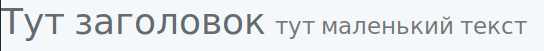
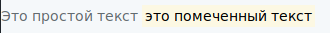
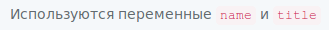
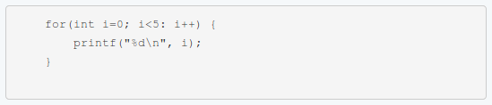
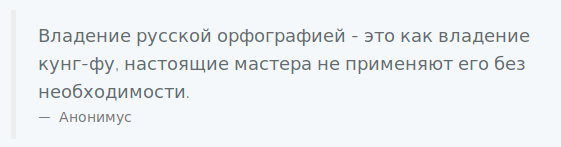
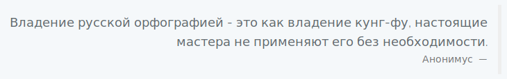
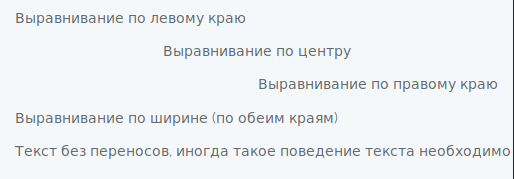
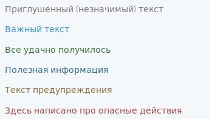
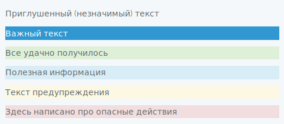

Управлять версткой текста можно через теги и через классы. Ниже перечислены основные приемы верстки.
Маленький текст через тег <small>
Пример:
<h1>Тут заголовок <small>тут маленький текст</small></h1>

Тег <small> в Bootstrap настроен так, что отображаемый текст уменьшается до 85% от основного текста, а так же меняется его цвет на более нейтральный (более светлый).
Помеченный текст (выделенный текст, маркировка) через тег <mark>
Пример:
<p>Это простой текст <mark>это помеченный текст</mark></p>

Выделенный текст выделяется более насыщенным цветом и имеет немного подсвеченный фон.
Элементы кода через тег <code> и <pre>
Пример:
<p>Используются переменные <code>name</code> и <code>title</code></p>
Результат:

Чтобы выделить блок кода, можно воспользоваться тегом <pre>. Этот тег подготовлен так, что текст в нем будет выводиться со всеми переносами, которые есть в исходнике, будет использован моноширинный шрифт, и весь текст, в нем заключенный, будет выводиться в рамочке. Пример:
<pre>
for(int i=0; i<5: i++) {
printf("%d\n", i);
}
</pre>

Чтобы в конце кода небыло пустого места, необходимо помещать закрывающий тег </pre> сразу после последнего символа кода, вот так:
...
}</pre>
Или весь код и оба тега <pre> размещать без отступов, т. е. с начала строки в HTML-исходнике.
Цитаты через тег <blockquote>
Пример:
<blockquote>
Владение русской орфографией - это как владение кунг-фу,
настоящие мастера не применяют его без необходимости.
<footer>Анонимус</footer>
</blockquote>
Выглядеть эта надпись будет так:

Цитату можно прижать к противоположному краю листа, это делается с помощью класса blockquote-reverse, вот так:
<blockquote class="blockquote-reverse">
...
Выглядеть такая цитата будет так:

Выравнивание текста через классы "text-..."
Пример:
<p class="text-left">Выравнивание по левому краю</p>
<p class="text-center">Выравнивание по центру</p>
<p class="text-right">Выравнивание по правому краю</p>
<p class="text-justify">Выравнивание по ширине (по обеим краям)</p>
<p class="text-nowrap">Текст без переносов, иногда такое поведение текста необходимо</p>
Результат:

Трансформация регистра текста через классы "text-..."
Пример:
<p class="text-uppercase">надпись будет видна в верхнем регистре</p>
<p class="text-lowercase">НАДПИСЬ БУДЕТ ВИДНА В НИЖНЕМ РЕГИСТРЕ</p>
<p class="text-capitalize">надпись с заглавными буквами в каждом слове</p>
Результат:
Подсветка текста через классы "text-..." и "bg-..."
Подсветка текста происходит с помощью выделения цветом самих букв текста.
Пример:
<p class="text-muted">Приглушенный (незначимый) текст</p>
<p class="text-primary">Важный текст</p>
<p class="text-success">Все удачно получилось</p>
<p class="text-info">Полезная информация</p>
<p class="text-warning">Текст предупреждения</p>
<p class="text-danger">Здесь написано про опасные действия</p>
Результат:

Но можно подсвечивать не само начертание текста, а задний фон текста. Для этого используются классы "bg-...". Пример:
<p class="bg-muted">Приглушенный (незначимый) текст</p>
<p class="bg-primary">Важный текст</p>
<p class="bg-success">Все удачно получилось</p>
<p class="bg-info">Полезная информация</p>
<p class="bg-warning">Текст предупреждения</p>
<p class="bg-danger">Здесь написано про опасные действия</p>
Результат:
